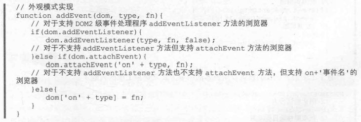
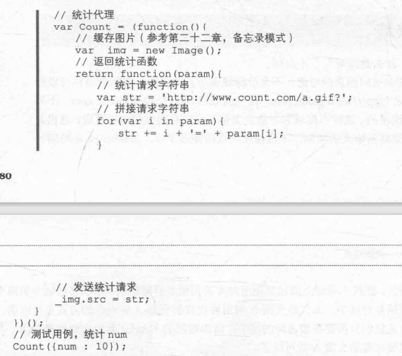
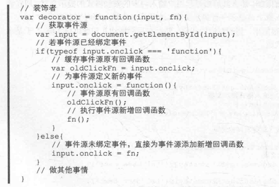
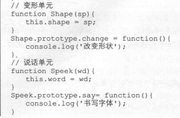
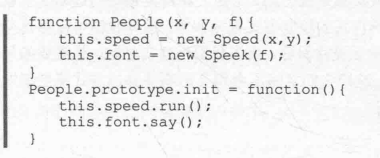
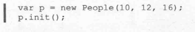

JavaScript设计模式读书笔记(3)
结构型设计模式
结构型设计模式关注于如何将类或对象组合成更大、更复杂的结构，以简化设计
外观模式
外观模式(Facade):为一组复杂的子系统接口提供一个更高级的统一接口，通过这个接口使得对子系统接口的访问更容易。在JavaScript中有时也会用于对底层结构兼容性做统一封装来简化用户使用
多用于兼容模式

适配器模式
适配器模式(Adapter):将一个类(对象)的接口(方法或者属性)转化成另外一个接口,以满足用户需求，使类(对象)之间接口的不兼容问题通过适配器得以解决
(1)适配异类框架
(2)参数适配器：通常是以一个参数对象方式传入
(3)数据适配
比如一个数组，每个元素代表不同意义，数据结构语义不好，将其适配为一个对象等
(4)服务端数据适配
获取接口的数据，先做一个适配，再使用统一的处理方法
代理模式
代理模式(Proxy):由于一个对象不能直接引用另一个对象，所以需要通过代理对象在这两个对象之间起到中介的作用
代理对象
(1)img之类的标签通过src属性可以向其他域下的服务器发送请求
缺点：请求是get请求，且是单向的，不会有响应数据
示例：站长统计

(2)JSONP
通过script标签
需要其他域下的服务端配合前端做出针对处理
(3)代理模板
不同域之间相互调用对方的页面是有限制的，那么自己域中的两个页面相互之间的调用是可以的，即代理页面B调用被代理的页面A中对象的方式是可以的。那么要实现这种方式我们只需要在被访问的域中，请求返回的Header重定向到代理页面，并在代理页面中处理被代理的页面A
装修者模式
装饰者模式(Decorator):在不改变原对象的基础上，通过对其进行包装拓展(添加属性或者方法)使原有对象可以满足用户的更复杂需求

适配器与装修者的区别
适配器方法是对原有对象适配，添加的方法与原有方法功能上大致相似；使用适配器时新增的方法是要调用原来的方法，要了解原有方法实现的具体细节
装饰者提供的方法与原来的方法功能项是有一定区别的；不需要了解对象原有的功能，并且对象原有的方法照样可以原封不动地使用
桥接模式
桥接模式(Bridge):在系统沿着多个维度变化的同时，又不增加其复杂度并已达到解耦
先抽象提取共用部分，然后将实现与抽象通过桥接方法链接在一起，来实现解耦的作用



桥接模式最主要的特点即是将实现层(如元素绑定的事件)与抽象层(如修饰页面UI逻辑)解耦分离，使两部分可以独立变化
组合模式
组合模式(Composite):又称部分-整体模式，将对象组合成树形结构以表示“部分整体”的层次结构。组合模式使得用户对单个对象和组合对象的使用具有一致性。
组合模式常用语创建表单。
享元模式
享元模式(Flyweight):运用共享技术有效地支持大量的细粒度的对象，避免对象间拥有相同内容造成多余的开销。
享元模式主要还是对其数据、方法共享分离，它将数据和方法分成内部数据、内部方法和外部数据、外部方法。内部方法与内部数据指的是相似或者共有的数据和方法,所以将这一部分提取出来减少开销，以提高性能。
在一些小程序中，性能与内存的消耗对程序的执行影响不大时，强行应用享元模式而引入复杂的代码逻辑,往往会收到负效应。